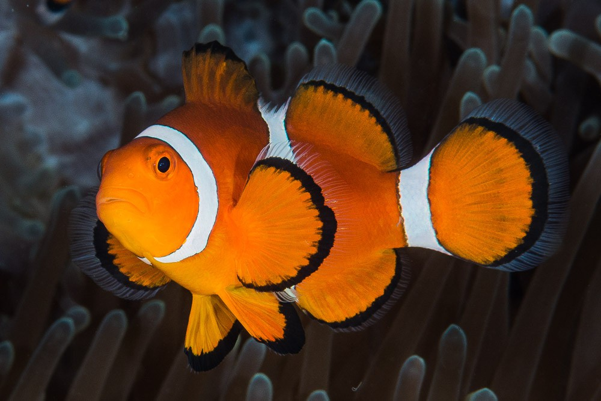
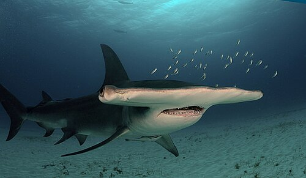

El Pez Payaso (Amphiprion ocellaris)
su habitat:Arrecifes de coral poco profundos, con presencia de anémonas marinas (su simbiosis característica). Prefiere aguas cálidas,
claras y protegidas donde pueda resguardarse entre los tentáculos de la anémona.
Alimentacion:Omnívoro: se alimenta de algas, pequeños crustáceos, zooplancton y restos que quedan alrededor de la anémona.
En cautiverio acepta comida comercial (flakes, pellets) y alimentos congelados (artemia, mysis).
Dato curioso: El pez payaso es inmune al veneno de la anémona gracias a una capa de mucus en su piel; además, presentan hermafroditismo secuencial:
si la hembra alpha muere, el macho dominante cambia de sexo para convertirse en hembra.
Informacion general: Pez pequeño y colorido, famoso por sus franjas blancas sobre fondo anaranjado y borde negro. Mide alrededor de 7–11 cm. Es muy popular en acuarios y habita arrecifes tropicales del océano Índico y Pacífico. Tiene
comportamiento social en grupos jerarquizados donde la hembra dominante es la de mayor tamaño.

Tiburón martillo (Sphyrna mokarran)
su habitat:Aguas costeras y mar abierto; frecuenta tanto zonas superficiales como profundidades moderadas.
Se acerca a ensenadas, bancos de arena y áreas donde se concentran peces, y a veces realiza migraciones estacionales.
Alimentacion:Carnivoro:se alimenta principalmente de peces óseos, rayas, cefalópodos y, ocasionalmente, crustáceos.
Utiliza la forma de su cabeza para localizar presas enterradas y para inmovilizar animales planos como las rayas.
Dato curioso: La forma del “martillo” no solo mejora la visión (ojos más separados) sino que también contiene receptores sensoriales (ampollas de Lorenzini) distribuidos que le permiten detectar la bioelectricidad de sus presas con gran precisión.
Muchas especies de tiburón martillo están amenazadas por la pesca dirigida y la captura incidental.
Informacion general:Tiburón de gran tamaño reconocido por la cabeza en forma de “T” o “martillo” (cefalóforo). La cabeza amplia mejora su campo visual y su detección de señales eléctricas.
Puede alcanzar varios metros de longitud y se distribuye en mares tropicales y templados del mundo.